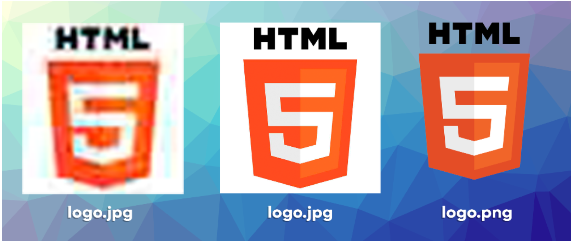
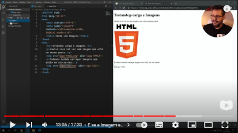

O algoritmo de compactação JPEG (Joint Photographics Experts Group) é usado para gerar imagens fotográficas com tamanho bem reduzido, foi criado em 1983 por Eric Hamilton. A grande vantagem de usar arquivos JPG (em formato JPEG) é gerar arquivos pequenos q ocupam pouco espaço. Só tente não exagerar na hora de configurar o nível de compactação, para a imagem não ficar borrada.
O formato PNG (Portable Network Graphis) surgiu em 1996, desenvolvido pelo W3C com o objetivo de substituir o fomato GIF (q voltou a ser popular devido ao insta e zipzop). Ele também é um formato compactado, mas nem tanto quanto o JPEG. Sua principal característica, q o difere do JPEG, é a capacidade de configurar a opacidade de cada pixel (podendo torná-lo transparente ou limitar sua transparência).
As imagens podem ter seu tamanho editado no GIMP, já está baixado Aqui está um exemplo de comparação:

Podemos também carregar imagens que estão em subpastas, basta usar o comando crtl+espaço e acessar a subpastas onde ela está, ex:

Lembre-se de exportar ao invés de salvar, assim a imagem vem em formato png e ñ gimp.
A imagem acima foi pega do meu computador, usando seu nome e formato, mas também posso pegar imagens externas, para isso preciso de sua URL, exemplo:
Caso o servidor dessas imagens caiam elas ñ aparecem mais.